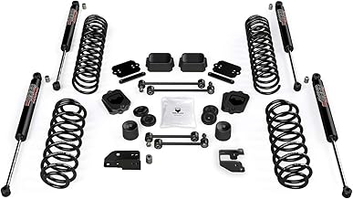
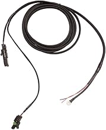
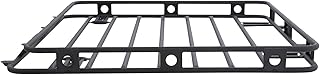
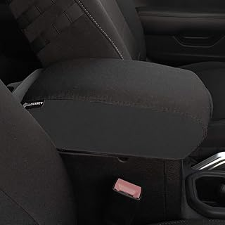
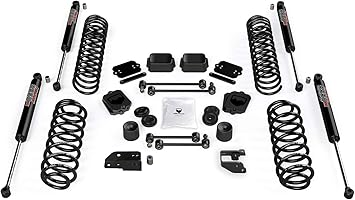
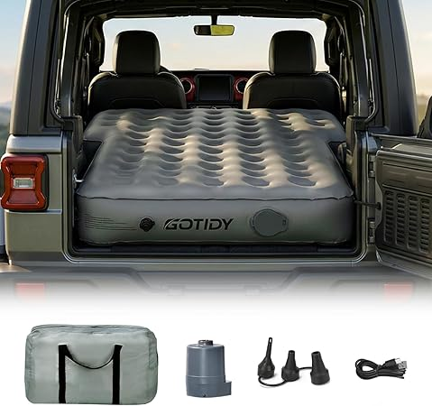
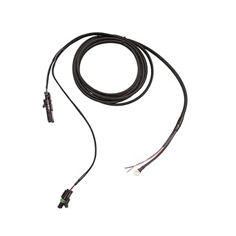
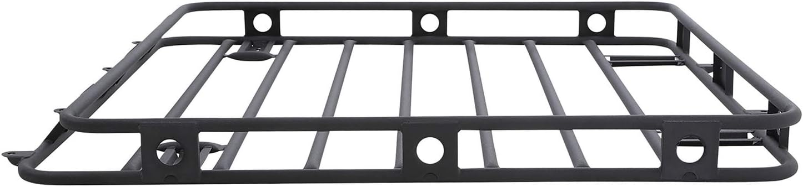
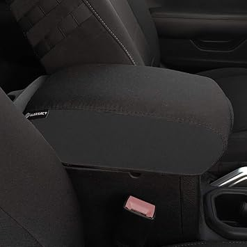

May 2026
jlscrambler isn't one-size-fits-all. What's perfect for one buyer can miss the mark for another. Here's how to figure out what fits you.
Trusting fake reviews — Look for reviews with photos and specific details. Generic praise is often planted.
Going with the cheapest option — Budget jlscrambler cut corners. Spending 20% more often gets something that lasts 3x longer.
Panic buying on sale days — Prime Day and Black Friday jlscrambler deals aren't always real discounts. Check year-round pricing.
Blind brand loyalty — Your favorite brand might not make the best jlscrambler. Stay open to better options.




⭐ 4.2 · $52.49
⭐ 4.5 · $323.96
$111.00
⭐ 4.8 · $139.99
⭐ 4.2 · $1,067.98

Teraflex Suspension Lift Kit JL Scrambler — Consistently rated
Mopar Pickup Bed Jeep Wrangler JL — Top rated
AEV Brute Double Cab Conversion Kit Jeep JL — Top rated
Smittybilt Bed Rack Jeep JL — Fan favorite
Bartact Seat Covers JL Scrambler — Best sellerThe best jlscrambler is the one that fits your needs and budget. Our detailed comparisons on jlscrambler.com make that call easier.